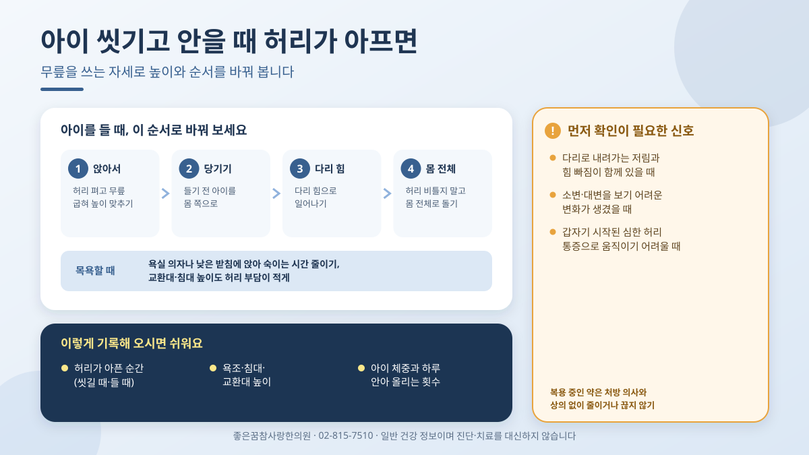

이종호 한의사 감수좋은꿈참사랑한의원 대표원장 (한의사 면허번호 19769)발행 2026-11-23 · 수정 2026-11-26
이 글의 차례
- 왜 이런 불편이 생길 수 있나요
- 먼저 이렇게 여쭙니다
- 일상에서 먼저 해 볼 수 있는 것
- 동작별로 이렇게 바꿔 보세요
- 예를 들면 이런 경우입니다
- 한의원에서 함께 살필 수 있는 경우
- 자주 하는 오해
- 스스로 점검해 보세요
- 이렇게 기록해 오시면 상담이 쉬워집니다
- 근육이 놀란 허리와 다리로 내려가는 허리 통증은 어떻게 다른가요?
- 왜 출산 뒤에는 허리를 받쳐 주는 힘이 약해질까요
- 목욕 시간 10분, 순서를 이렇게 짜 보세요
- 아이가 자라며 허리 부담은 이렇게 바뀝니다
- 허리가 삐끗한 뒤 첫 며칠은 이렇게 지내 보세요
- 아이를 안고 일어서는 순간, 이 세 가지만 기억하세요
- 진료 중에는 아이 돌봄 일정을 함께 이야기합니다
- 얼마나 지켜보고, 언제 확인하면 좋을까요
- 처음 오시면 이렇게 진행합니다
- 이런 증상은 먼저 확인이 필요합니다
- 관련 글
아이 목욕과 기저귀 갈기, 침대에 눕히기는 모두 허리를 숙이는 동작입니다. 한 번은 짧아도 하루에 여러 번 반복되면 허리가 먼저 신호를 보내기 쉬워, 동작의 순서와 높이를 바꾸는 것부터 시작합니다.
왜 이런 불편이 생길 수 있나요
- 무릎을 편 채 허리만 숙여 들면 허리 근육과 관절이 무게를 대부분 떠안게 됩니다.
- 아이를 몸에서 멀리 둔 채 들어 올리면 같은 무게라도 허리 부담이 커집니다.
- 욕조와 침대가 낮으면 숙인 자세로 머무는 시간이 길어집니다.
- 피로와 수면 부족이 겹치면 근육이 쉽게 지쳐 통증을 더 크게 느낄 수 있습니다.
- 아이를 한쪽 팔과 골반에 걸쳐 안는 습관이 있으면 한쪽 허리와 골반에만 부담이 몰리기 쉽습니다.
먼저 이렇게 여쭙니다
- 허리가 가장 아픈 순간은 아이를 씻길 때인가요, 안아 올릴 때인가요?
- 욕조나 침대 높이가 몸에 비해 낮아 허리를 많이 숙이게 되지는 않나요?
- 아이를 들 때 몸에서 멀리 떨어뜨려 안지 않나요?
- 통증이 다리로 이어지거나 저린 느낌이 있나요?
- 아침에 일어날 때와 저녁 중 언제 더 아픈가요?
- 출산한 지 얼마나 되었고, 지금 수유 중인가요?
일상에서 먼저 해 볼 수 있는 것
- 허리를 펴고 무릎을 굽혀 앉는 자세로 아이 높이에 맞추기
- 아이를 들기 전에 몸 쪽으로 먼저 끌어당긴 뒤 다리 힘으로 일어나기
- 목욕 때 욕실 의자나 낮은 받침에 앉아 허리를 숙이는 시간 줄이기
- 기저귀 교환대나 침대 높이를 허리 부담이 적게 조절하기
- 아이를 안고 일어설 때 허리를 비틀지 말고 몸 전체로 돌기
- 목욕 준비물(수건, 옷, 기저귀)을 미리 허리 높이에 펼쳐 두어 아이를 안은 채 숙이는 일 줄이기
- 아이를 안는 팔과 쪽을 번갈아 바꾸기

동작별로 이렇게 바꿔 보세요
- 욕조 목욕: 욕조 밖 바닥에 무릎을 꿇거나 낮은 의자에 앉아 팔꿈치를 욕조 가장자리에 걸치기
- 아기 욕조를 바닥에 둘 때: 식탁이나 세면대 옆 평평하고 흔들리지 않는 받침 위로 올려 허리를 덜 숙이기
- 기저귀 갈기: 바닥보다 허리 높이의 교환대나 침대 가장자리 이용하기, 바닥에서 할 땐 양반다리로 앉기
- 아기 침대에 눕히기: 침대 난간을 낮춘 뒤 한쪽 무릎을 굽혀 몸을 낮추고 내려놓기
- 카시트 태우기: 차 문 앞에서 허리를 비틀지 말고 한쪽 무릎을 시트에 올려 몸을 가까이 대기

예를 들면 이런 경우입니다
- 예를 들어 저녁마다 아기 욕조를 욕실 바닥에 두고 쪼그려 앉아 씻기는 경우라면, 목욕 뒤 일어설 때 허리가 뻣뻣하게 잡히기 쉬워 욕조를 받침 위로 올리고 무릎 꿇은 자세로 바꿔 보시기를 권합니다.
- 예를 들어 첫째를 안아 주고 둘째를 씻기는 등 하루 종일 들었다 놨다 하는 부모라면, 몇 번 안는지보다 어느 동작에서 가장 아픈지 하나를 골라 그 동작부터 바꾸는 편이 현실적입니다.
- 예를 들어 손주를 돌보시느라 아이를 자주 안아 올리는 할머니·할아버지라면, 허리와 함께 무릎 부담도 커질 수 있어 앉은 자세에서 아이를 안아 올리는 방법을 먼저 함께 살핍니다.
한의원에서 함께 살필 수 있는 경우
- 아이를 들 때마다 허리 한쪽이 당기는 경우 들어 올리는 방식과 몸의 균형을 함께 살핍니다.
- 앉았다 일어설 때 허리가 뻐근하게 이어지는 경우 하루 자세와 활동량을 함께 살핍니다.
- 잠이 부족하고 피로가 쌓여 허리 부담이 더 크게 느껴지는 경우 휴식과 생활 리듬을 함께 살핍니다.
좋은꿈참사랑한의원에서는 허리와 골반의 움직임과 함께 다리로 내려가는 증상이 있는지 확인합니다. 필요하다고 판단될 때 침이나 추나 등을 상태에 맞춰 정하고, 귀가 전에는 목욕과 기저귀 갈기 때 바꿔 볼 자세를 알려 드립니다.
자주 하는 오해
- 아이 키울 때 허리 아픈 건 누구나 겪는 일이라 참고 넘기는 분이 많지만, 동작 하나만 바꿔도 부담을 나눌 수 있어 일찍 살펴보는 편이 좋습니다.
- 아이가 더 크면 저절로 괜찮아질 거라 여기기 쉬운데, 아이가 무거워질수록 같은 자세의 부담은 오히려 커질 수 있습니다.
스스로 점검해 보세요
- 아이를 안아 올린 뒤 허리를 펴는 데 몇 초 이상 걸린다
- 목욕을 마치고 일어설 때 허리를 손으로 짚게 된다
- 아이를 늘 같은 쪽 팔과 골반으로 안는다
- 아침에 일어날 때 허리가 가장 뻣뻣하다
- 하루 잠이 5시간이 안 되는 날이 일주일에 절반 이상이다
- 엉덩이나 다리 쪽으로 당기거나 저린 느낌이 있다
- 손목이나 어깨도 함께 아프다
두세 개 이상 해당한다면 아픈 동작을 메모해 상담 때 함께 말씀해 주세요.
이렇게 기록해 오시면 상담이 쉬워집니다
- 허리가 아픈 순간(씻길 때, 들 때, 일어설 때)
- 욕조·침대·기저귀 교환대 높이
- 아이 체중과 하루에 안아 올리는 대략의 횟수
- 출산 시기와 수유 여부, 복용 중인 약
근육이 놀란 허리와 다리로 내려가는 허리 통증은 어떻게 다른가요?
아이를 들다 허리가 아프면 같은 '허리 통증'으로 묶어 말씀하시지만, 아픈 모양에 따라 살필 점이 다릅니다.
- 근육이 놀란 경우: 허리 한쪽이나 양옆이 뻣뻣하고, 숙이거나 돌아누울 때 아프다가 며칠 지나며 조금씩 풀리는 경우가 많습니다.
- 관절 쪽이 예민한 경우: 허리를 뒤로 젖히거나 오래 서 있을 때 허리 아래쪽이 시큰하고, 앉으면 조금 편해지기도 합니다.
- 신경이 자극받는 경우: 엉덩이에서 허벅지 뒤, 종아리로 당기거나 저린 느낌이 내려오고, 기침이나 재채기에 다리까지 울리기도 합니다.
다리로 내려가는 증상이 있는지, 어떤 동작에서 아픈지를 먼저 확인하는 것도 이 때문입니다. 아픈 곳을 손가락으로 짚어 보여 주시면 이야기를 정리하기 쉽습니다.
왜 출산 뒤에는 허리를 받쳐 주는 힘이 약해질까요
임신 기간 동안 배가 커지며 복부 근육이 늘어나고, 출산 전후로 골반 주변 인대도 느슨해지는 시기를 거칩니다. 허리를 앞에서 받쳐 주던 힘이 줄어든 상태에서 아이를 들어 올리는 일이 하루 수십 번 더해지니 허리가 먼저 지치기 쉽습니다.
여기에 수면 부족과 끼니를 서서 급히 해결하는 생활이 겹치면 근육이 회복할 시간이 모자랄 수 있습니다. 그래서 허리만 보지 않고 잠과 식사, 출산 방법과 시기를 함께 여쭙습니다.
몸이 허락한다면 누운 자세에서 하는 가벼운 동작부터 시작해 볼 수 있습니다. 출산한 지 얼마 되지 않았거나 제왕절개를 했다면, 출산한 병원에서 운동을 시작해도 된다는 말을 들은 뒤에 하세요.
- 누운 자세에서 무릎을 세우고, 숨을 내쉬며 배꼽을 등 쪽으로 살짝 당겼다 풀기
- 같은 자세에서 허리를 바닥에 지그시 눌렀다 떼는 골반 기울이기를 천천히 열 번
- 아프거나 아랫배가 불룩 솟는 느낌이 들면 멈추고, 출산한 병원이나 진료 때 상의하기
목욕 시간 10분, 순서를 이렇게 짜 보세요
목욕 시간을 순서대로 떠올려 보면, 아이를 안은 채 수건이나 옷을 찾느라 허리를 숙이는 순간이 꽤 많습니다. 앞에서 말씀드린 대로 준비물을 허리 높이에 먼저 펼쳐 두고 물 온도까지 맞춘 뒤 아이를 데려오세요. 씻기는 동안 아이 곁을 떠나지 않아도 되니 안전에도 도움이 됩니다.
다 씻긴 뒤에는 무릎 위에 수건을 펼쳐 두고 아이를 받아 안으면 허리를 덜 숙이게 됩니다. 욕조 물 버리기는 아이를 재운 뒤로 미루거나 다른 보호자에게 맡기고, 보호자가 둘이라면 한 사람은 씻기고 한 사람은 받는 식으로 역할을 나눠 보세요.
아이가 자라며 허리 부담은 이렇게 바뀝니다
아이의 성장 단계마다 허리를 쓰는 방식이 달라져, 지금 시기에 맞춰 바꿀 점도 다릅니다.
- 신생아 시기: 무게는 가볍지만 목을 받치며 오래 숙이는 자세가 많습니다. 목욕과 기저귀 갈기의 높이를 맞추는 것이 먼저입니다.
- 앉기 시작할 무렵: 무게가 늘고 바닥에서 들어 올리는 일이 잦아집니다. 바닥에서 들 때는 한쪽 무릎을 꿇고 아이를 무릎 위로 먼저 올린 뒤 일어나세요.
- 걸음마 시기: 아이 손을 잡고 허리를 숙인 채 따라 걷는 시간이 길어집니다. 짧게 끊고, 아이가 소파나 낮은 가구를 잡고 걷게 해 주세요.
- 두 돌 전후: 안아 달라고 매달리거나 갑자기 몸을 뒤로 젖히는 일이 많습니다. 서서 들어 올리기보다 먼저 쪼그려 앉아 눈높이를 맞추고 안아 주세요.
허리가 삐끗한 뒤 첫 며칠은 이렇게 지내 보세요
아이를 들다 허리가 뜨끔했다면 첫 며칠을 어떻게 보내는지가 중요합니다.
- 하루 종일 누워 있기보다 아프지 않은 범위에서 집 안을 천천히 걸어 다니세요.
- 누울 때는 무릎 아래에 베개를 받치고, 일어날 때는 옆으로 돌아누운 뒤 팔로 밀고 일어나세요.
- 아이는 서서 들기보다 소파에 앉은 상태에서 다른 보호자가 건네주는 방식으로 안아 주세요.
- 찜질은 한 번에 15~20분 정도로 하고, 찜질기를 켠 채 잠들지 않습니다.
다친 직후에는 근육이 스스로를 보호하려고 굳어 있어 하루 사이에도 움직임이 꽤 달라질 수 있습니다. 그래서 저는 삐끗한 초기에는 가까운 간격으로 살피다가, 불편이 줄어드는 흐름을 보며 간격을 넓혀 가자고 말씀드립니다. 통증이 사라진 직후보다 아이를 다시 안아 올렸을 때 괜찮은지가 더 중요한 기준입니다.
아이를 안고 일어서는 순간, 이 세 가지만 기억하세요
허리가 놀라기 쉬운 순간은 무게를 든 채 비틀며 일어설 때입니다. 앞에서 말씀드린 요령을 바쁜 순간에도 떠올리기 쉽게 '가까이, 무릎으로, 발 먼저' 세 마디로 줄여 두셔도 좋습니다. 아이를 몸 쪽으로 먼저 당기고, 다리 힘으로 일어나고, 방향은 발을 옮겨 바꾸라는 뜻입니다.
진료 중에는 아이 돌봄 일정을 함께 이야기합니다
허리를 아끼는 방법은 집마다 다릅니다. 욕실 구조와 아이 나이, 함께 돌보는 사람이 있는지에 따라 현실적으로 바꿀 수 있는 것이 달라지기 때문입니다. 그래서 진료 때 하루 돌봄 일정을 시간 순서대로 들어 보고, 허리를 가장 많이 숙이는 시간대 한 곳을 골라 그 부분부터 함께 바꿉니다.
처음에는 한 가지만 바뀌어도 충분합니다. 그 한 가지가 생활에 자리 잡으면 다음 동작으로 넘어가며, 무리 없이 허리를 아끼는 습관을 늘려 갑니다.

얼마나 지켜보고, 언제 확인하면 좋을까요
- 목욕이나 들어 올린 뒤 잠깐 뻐근하다가 하루 이틀 안에 가라앉는다면, 위의 동작을 바꿔 보며 1~2주 지켜보셔도 됩니다.
- 자세를 바꿨는데도 2주 넘게 같은 동작에서 통증이 이어지거나, 아이를 안기가 겁날 정도라면 상담을 받아 보세요.
- 아침마다 허리가 굳어 펴지는 데 30분 넘게 걸리는 날이 이어진다면 기록해 두었다가 진료 때 말씀해 주세요.
처음 오시면 이렇게 진행합니다
첫 방문에는 접수 때 기본 정보를 적고, 진료실에서는 먼저 맥을 짚습니다. 맥을 짚으면서 아픈 동작과 시작된 시기, 출산 시기와 수유 여부, 잠을 여쭙고, 이어서 신체 진찰로 아이를 들어 올리는 동작을 직접 해 보며 허리와 골반의 움직임을 확인합니다. 필요하다고 판단될 때 초음파로 살피기도 합니다.
오늘 받을 치료와 이유를 먼저 설명드린 뒤 진행하고, 치료 중 자세나 자극이 불편하면 언제든 말씀해 주세요. 아이와 함께 오셔야 한다면 방문 전 전화(02-815-7510)로 확인해 주세요.
아이를 씻기고 재우고 나면 정작 내 허리는 뒷전이 되기 쉽습니다. 한 번에 다 바꾸려 애쓰지 않으셔도 괜찮습니다. 다음에 오시면 바꿔 본 동작 하나가 어땠는지, 아침에 허리를 펴기까지 얼마나 걸렸는지부터 여쭙겠습니다.
이런 증상은 먼저 확인이 필요합니다
- 다리에 힘이 빠지거나, 다리로 내려가는 저림이 점점 심해지는 경우
- 소변이나 대변을 보기 어렵거나, 엉덩이·사타구니 감각이 둔해진 경우
이런 신호가 있으면 한의원보다 가까운 병원이나 응급실을 먼저 찾으세요.
관련 글
- 30대 부모가 아이를 안고 다니며 자세가 무너질 때 추나 상담은 어떻게 하나요?
- 출산하고 몇 달이 지났는데 아기를 안고 일어설 때마다 허리와 골반이 아플 때는 어떻게 살피나요?
- 손주를 돌보는 어르신이 아이를 안아 올리다 허리와 무릎이 아플 때는 어떻게 살피나요?

여쭙는 것
- 허리가 가장 아픈 순간은 아이를 씻길 때인가요, 안아 올릴 때인가요?
- 욕조나 침대 높이가 몸에 비해 낮아 허리를 많이 숙이게 되지는 않나요?
- 아이를 들 때 몸에서 멀리 떨어뜨려 안지 않나요?
생활에서 해 볼 것
- 허리를 펴고 무릎을 굽혀 앉는 자세로 아이 높이에 맞추기
- 아이를 들기 전에 몸 쪽으로 먼저 끌어당긴 뒤 다리 힘으로 일어나기
- 목욕 때 욕실 의자나 낮은 받침에 앉아 허리를 숙이는 시간 줄이기
한의원에서 함께 살필 것
- 아이를 들 때마다 허리 한쪽이 당기는 경우 들어 올리는 방식과 몸의 균형을 함께 살…
- 앉았다 일어설 때 허리가 뻐근하게 이어지는 경우 하루 자세와 활동량을 함께 살핍니다.
- 잠이 부족하고 피로가 쌓여 허리 부담이 더 크게 느껴지는 경우 휴식과 생활 리듬을…
먼저 확인이 필요한 신호
- 다리에 힘이 빠지거나, 다리로 내려가는 저림이 점점 심해지는 경우
- 소변이나 대변을 보기 어렵거나, 엉덩이·사타구니 감각이 둔해진 경우
한눈에 보는 표
| 구분 | 핵심 |
|---|---|
| 여쭙는 것 | 허리가 가장 아픈 순간은 아이를 씻길 때인가요, 안아 올릴 때인가요? 욕조나 침대 높이가 몸에 비해 낮아 허리를 많이 숙이게 되지는 않나요? |
| 생활에서 해 볼 것 | 허리를 펴고 무릎을 굽혀 앉는 자세로 아이 높이에 맞추기 아이를 들기 전에 몸 쪽으로 먼저 끌어당긴 뒤 다리 힘으로 일어나기 |
| 한의원에서 함께 살필 것 | 아이를 들 때마다 허리 한쪽이 당기는 경우 들어 올리는 방식과 몸의 균형을 함께 살핍니다. 앉았다 일어설 때 허리가 뻐근하게 이어지는 경우 하루 자세와 활동량을 함께 살핍니다. |
| 먼저 확인이 필요한 신호 | 다리에 힘이 빠지거나, 다리로 내려가는 저림이 점점 심해지는 경우 소변이나 대변을 보기 어렵거나, 엉덩이·사타구니 감각이 둔해진 경우 |
자주 묻는 질문
허리 보호대를 하고 아이를 안아도 되나요?
단기간 보조로 쓰는 분도 있으나 오래 의존하면 몸이 쓰는 방식이 굳을 수 있어, 상담 때 상태를 보고 판단하는 편이 좋습니다.
아이가 무거워질수록 어떻게 해야 하나요?
안는 횟수를 줄이고 앉은 자세에서 아이와 놀아 주는 시간을 늘리면 허리 부담을 나눌 수 있습니다.
아플 때 찜질은 어떻게 하나요?
갑자기 삐끗해 열감이 있을 때는 차갑게, 뻐근하고 굳은 느낌일 때는 따뜻하게 하는 편이 일반적입니다. 헷갈리면 진료 때 여쭤보세요.
수유 중에도 침을 맞을 수 있나요?
수유 중임을 먼저 알려 주세요. 진찰한 뒤 침을 놓을지, 어디에 어떻게 놓을지 상의해 정합니다.
좋은꿈참사랑한의원은 재진 때 지난번 이야기부터 이어서 여쭙니다. 진료시간과 예약은 오시는 길에서 확인하세요.
어디서 상담받을 수 있나요?
좋은꿈참사랑한의원은 서울 동작구 만양로2길 2 신성빌딩 3층·5층(서울 동작구 상도동, 7호선 상도역 3번 출구 근처)에 있습니다. 한의사 3명(이종호 대표원장, 조영기 수석진료원장, 정원영 진료원장)이 진료합니다. 진료시간은 평일 09:30~20:00(점심 13:00~14:00), 토·일·공휴일 09:30~15:00이며, 방문 전 전화로 확인을 권합니다. 예약은 네이버 예약, 카카오톡 상담, 전화 02-815-7510로 받습니다.
이 글은 일반적인 건강 정보이며 개인의 진단이나 치료를 대신하지 않습니다. 증상이 있거나 복용 중인 약이 있다면 진료를 통해 확인하세요. 치료 효과는 개인마다 다를 수 있습니다.
작성 기준: 일반적으로 알려져 있는 건강 정보를 참고해 정리했습니다(대표원장 감수). 증상 기록은 1~2주 동안 하루 1회, 비슷한 시간에 적어 오시면 지난 상태와 비교하기 쉽습니다.